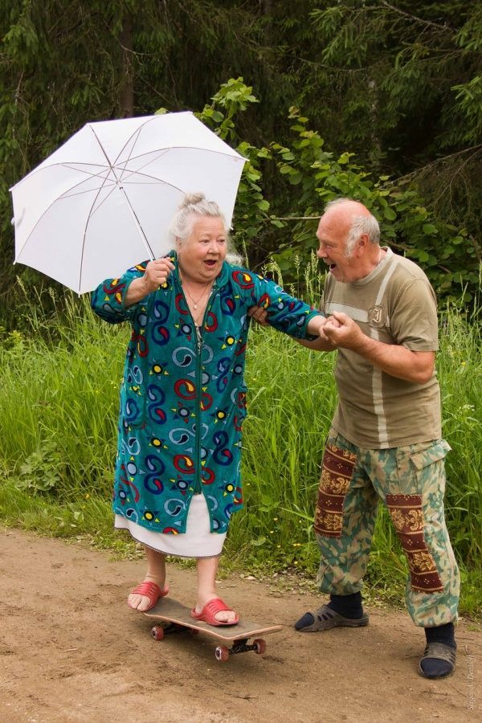

MANIFIESTO

El objetivo es generar un espacio de escucha, darle visibilidad a lo que a veces parece invisible. Un espacio en dondé las personas en la vejez puedan expresar su incomodidad acerca de una infraestructura que parece excluirlos. Queremos provocar empatía a cuerpos que aún no viven la vejez, que puedan observar esta etapa desde otra mirada de solidaridad y humanidad. ¿Cómo vemos la vejez? ¿Cómo no vemos la vejez?